Agnes Link
About Agnes
Community development is possible...
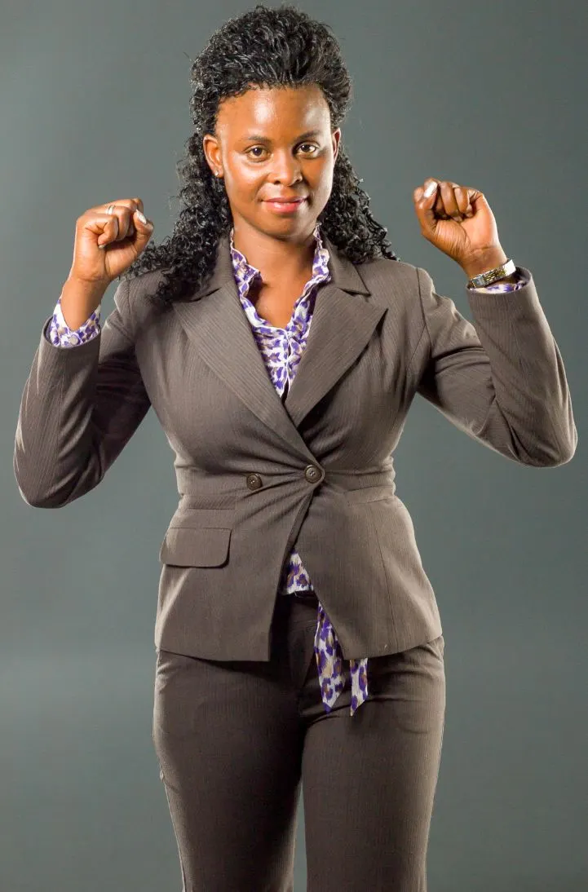
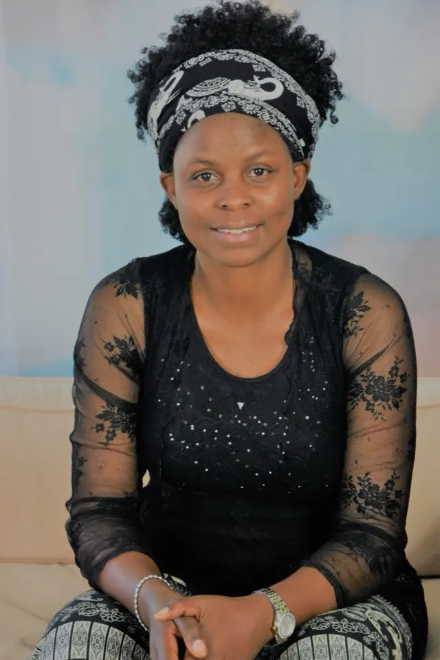
If we can all "STAND TOGETHER" in supporting one another, to have all of us and all people in all communities, societies, countries & continents to be:
thinking positive;
creative in employing our/their environment safely,
positively & productively;
independent, knowing what to do and do them accordingly & efficiently: definately "COMMUNITY DEVELOPMENT" can and will be achieved where it is not yet achieved:
THUS, the world becomes a better place for everybody to live.
Believing so, I seek to use my professional expertise and my own life experience as a village girl who have also been opportuned to travel to the different parts of the world;
to enhance Community development by focusing in supporting people in need to support themselves.
My vision
My vision is to see more than 75% of young people in Tanzania are able to think positive, they have self love and they are able to use their life potentials; they are creative in employing their environment safely, positively and productively; they are independent, knowing what to do and do them accordingly and efficiently.
To facilitate this vision, together with Agri-Connect Tanzania team; we enhance economic growth; by establishing Knowledge, Innovation, Creativity and Competence Centers (KICCC); that will stand as Youth Community Based Organization (YCBOs) under Agri-Connect TANZANIA.
My life experience tells me, the powerful man is the man full of knowledge and wisdom to apply such knowledge. In this sense "KNOWLEDGE IS POWER". Therefore we support young people by equiping them with practical knowldge that aims to bring them into self realization of their life potentials; and that they have all it takes to bring their lives into success. We do this by taking them through the process of mindset changing, capacity building and resources provision.
Why Agri-Connect TANZANIA
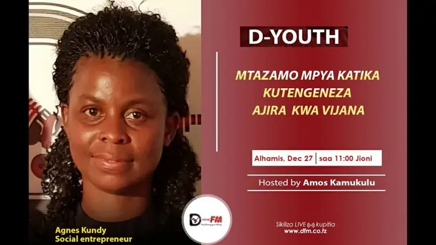
Opens YouTube in a new tabNEW AND CREATIVE WAYS & TECHNIQUES FOR CREATING SELF EMPLOYMENTS TO YOUNG PEOPLE
VIJANA KUJIWEZESHA,
VIJANA KUWEZESHANA &
VIJANA KUWEZESHWA..........
Addictions, alcoholism, drug abuse, hanging arround in the streats has become a reality of their daily life . Some of them hope for a better future in other countries which results in family separation, the need to adjust to new cultures and languages.
A lot of time and efforts is wasted, which could have been invested in creating a better future in their home lands.
As a solution we have established non governmental organization (NGO) called Agri-connect Tanzania. Our Goal is to support people to support themselves; by creating a sustainable environment, we give people possibility to stay productively and live a fulfilled life at home.
The idea its time has come...
Support me to reach those who are not yet reached

Another reason why you can invest in supporting me......
"Reach those who are not yet reached" is the main project Model in supporting people in need to support themselves. A-CT reaches people who havent been reached yet until we see their lives change into one stage to another. Some people are not yet reached because of many reasons, their Location, life status being one of them.
- There is highly talented youth in villages who are not yet reached.
- There are youth who are ambitious to live good life, to work hard but they have no means and havent been reached
- There young people who are already addicted hopeless hanging arroung in the streets, no body wants to even come near them because they are dirty smelling bad etc. A-CT is determined to reach and support them directly to the point they can support themselves
Why you should be part of supporting this mission
We are all potential, we all have something to give, we can all learn from each other, we can support each other.
We all have something to give.
Nobody has so much eough to give; equally as nobody has completely nothing to give. We all have something to give.
The challenges of young people is more psychological, behavioral and mental. it needs an intelligent strategy to bring them back to the positive thinking, appreciating life. And those who are already in life addictions back to normal through full transformation process. We can stand together and support this. We need each other. It needs seminars and workshops. it needs rehabilitation servive for those who needs transformation process.
The challenge of our young generation is a challenge of all. We can all be part of its solution. Be a support to this mission
About Agnes Edward Link (geb. Kundy)
A dedicated and highly committed, enthusiastic MBA graduate specializing in International Business. I have graduated training in Master’s in Business Administration (MBA), Master’s in Hospitality &Tourism and BA in Sociology. I am an excellent team player who has a mature and flexible approach to work, with strong IT, interpersonal skills and the ability to communicate and negotiate concisely at all levels. I enjoy being part of a team and thrive in new and challenging working environments. Highly organized, self-motivated individual with the ability to develop, creative and solutions to problems with good analytical skills.
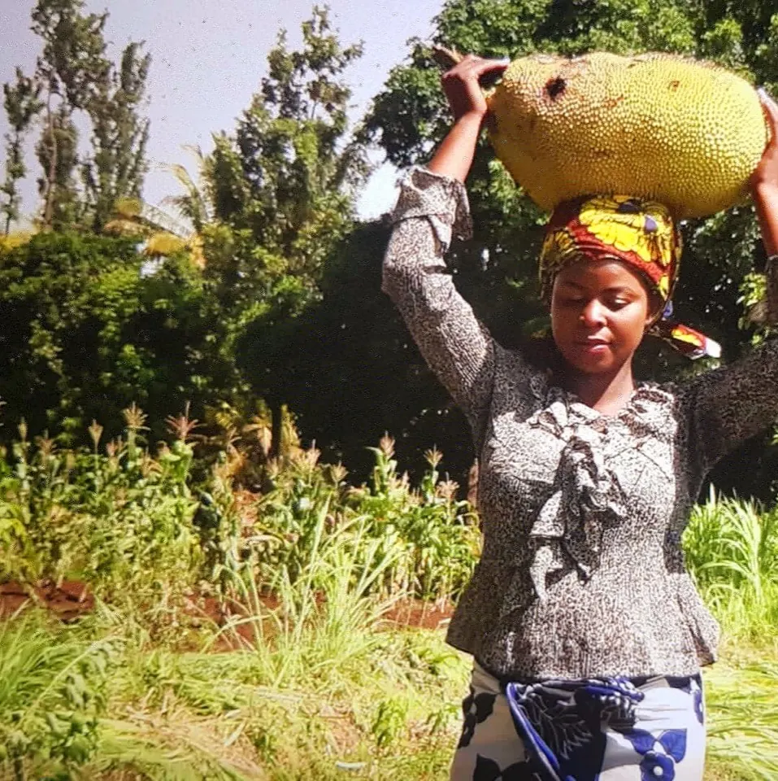
Purity and Life Reality
Purity&Life Reality is a programme by Agnes Link, that shares things that carry general knowledge that can benefit many as far as purity and life reality is concerned. The program runs atleast once a week where by a video clip is uploaded on YouTube, Instagram and Facebook.
To benefit from this program please visit us on the following platforms;
My Hobbies
Sports, reading&writting, networking, praying, singing&listerning to the music, supporting others and each others
My amaizing memorable activities
Climbing Mount Meru&Kilimanjaro (2015)
Climbing Mount Meru 4 days then continue 7 days to Mount Kilimanjaro and get to Uhuru Pick is one of my amazing memorable life adventure in my life time. The company and good friends we did this together will always be cherished in my attention. The friendship and love was amaizing, I thank God, I thank them. The journey tought me many things including the so called PAMOJA KWA UMOJA makes everything possible. We agreed to make it and we made it together, we are proud of what we did. Another thing is "Polepole" was the best strategy that made it possible.
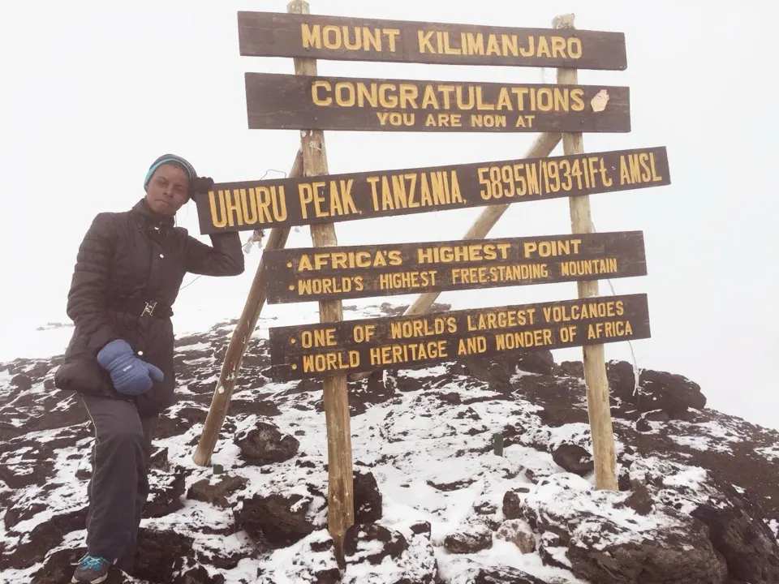
Singing
Is the best thing has happened to me. For more about my singing please visit Agneslink website.
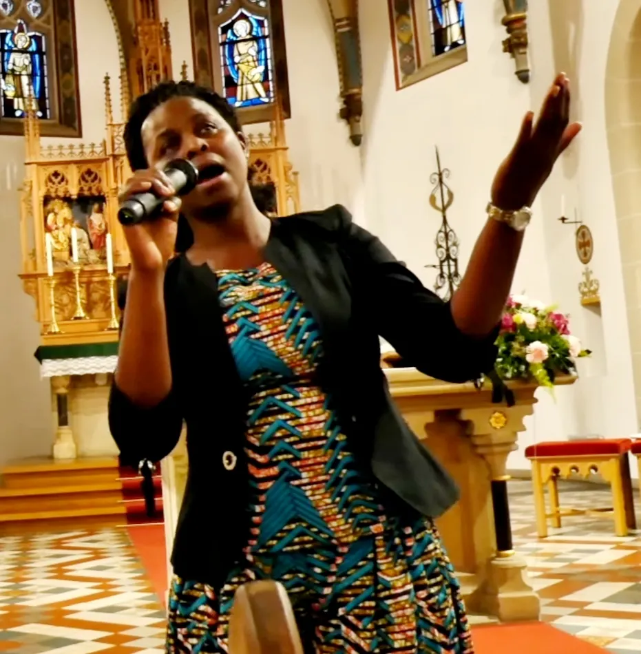
Diving
Ski Fahren
Full Kili - Marathon 2021
Follow me and subscribe to my Youtube channel
My education
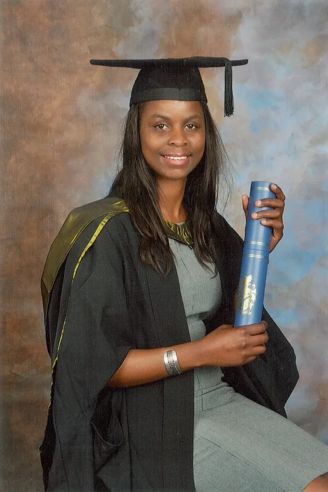
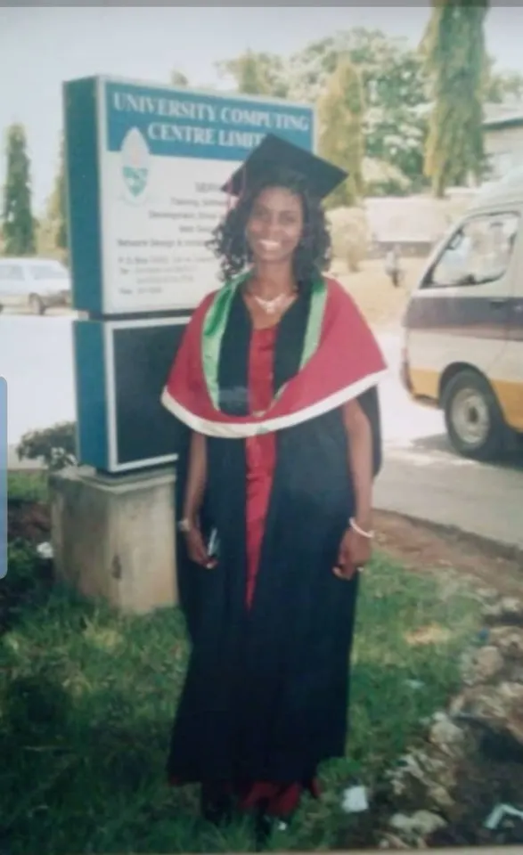
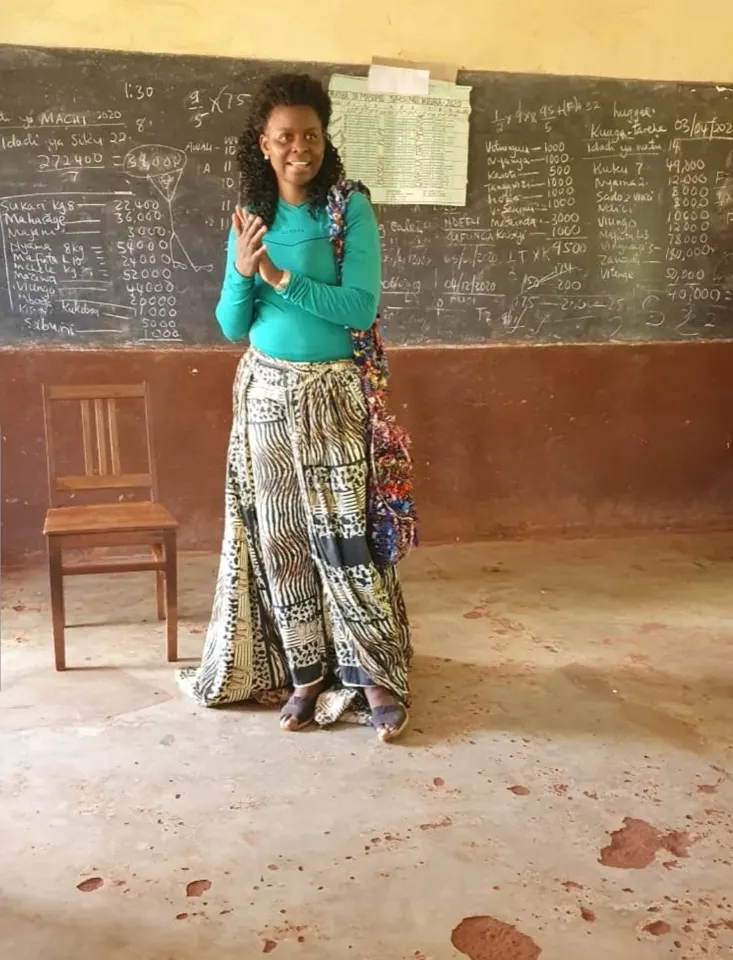
August 2012 University of Gloucestershire (UK) Awarded Master’s in Business Administration (MBA)
July 2011 : University of Wales, CARDIFF (UK) Awarded Masters in International Hospitality and Tourism Management
Feb-Dec 2009: Career Dreams (Botswana) ICM , UK Certified Single subjects diploma in; Human Resource in Hospitality; Marketing for Hospitality and Tourism; Accounting, Purchasing and cost control; Hospitality Management; and Hotel and catering law
Sept 2003-Jun 2006: University of Dar es Salaam, Tanzania Awarded Bachelor of Arts degree in Sociology
July 2000-May 2002: Korogwe girls High School, Tanga region in Tanzania A-Level secondary education; History, Kiswahili and English Language
Jan 1996-Sept 1999: Pakula Secondary School, Kilimanjaro region in Tanzania Ordinary Level Secondary Education; Maths, Biology, English Language,History, Kiswahili, Geography, Civics, Book-keeping and Commerce \
Things I do
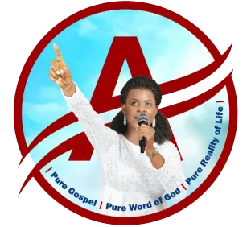
AgnesLink
YouTube Channel - where you can find all my video songs
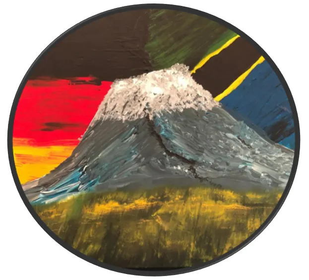
Agri-Connect Tanzania
NGO that supports people in need to support Themselves
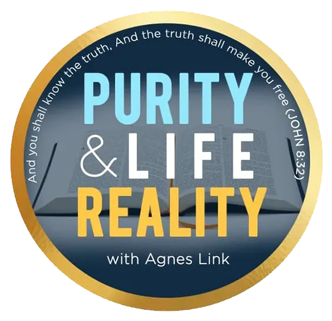
Purity and Life Reality
For sharing things that can benefit as far as Purity and life reality is concerned
The world
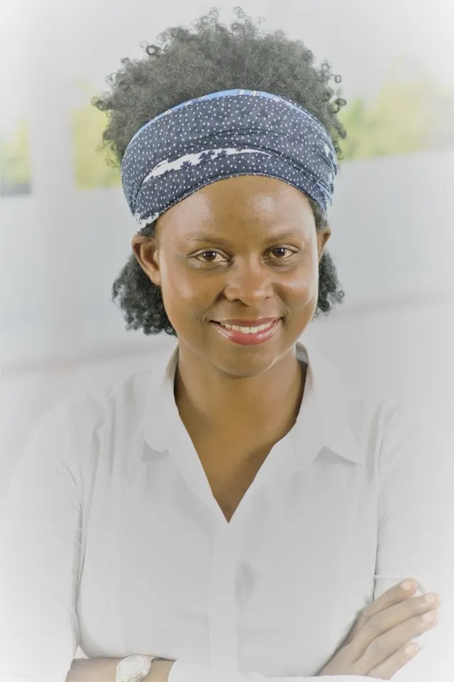
- The world needs us to love
- The world needs us to have togetherness
- The world needs us to help one another